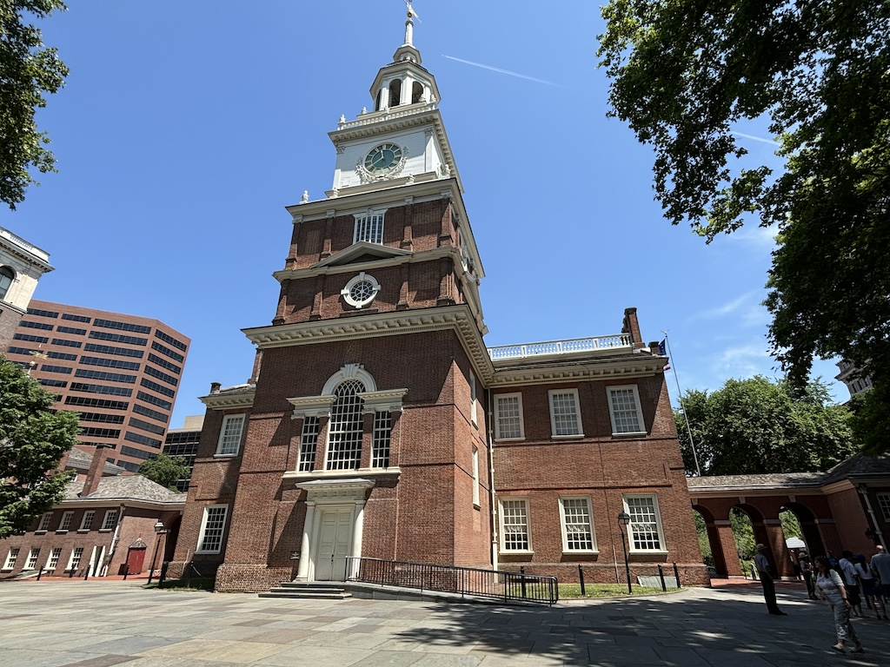
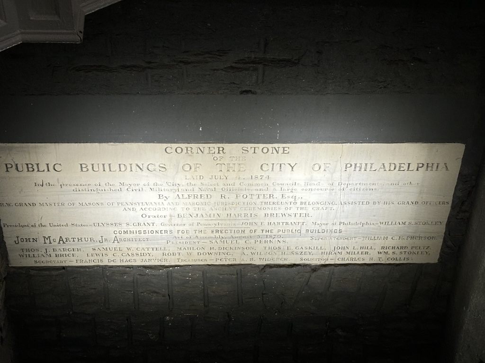
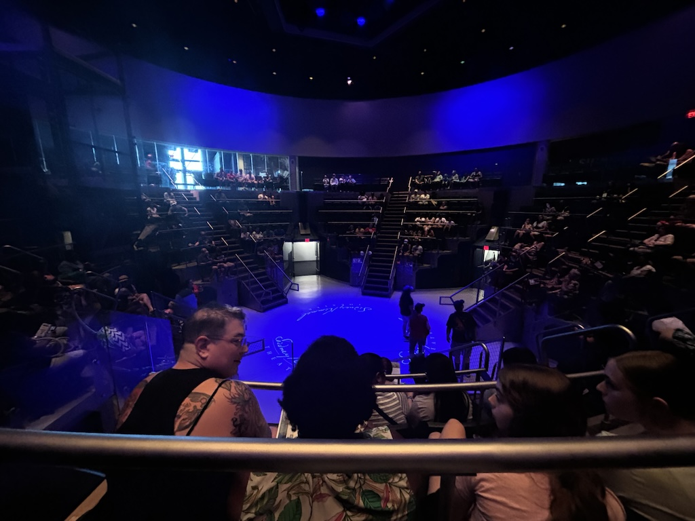
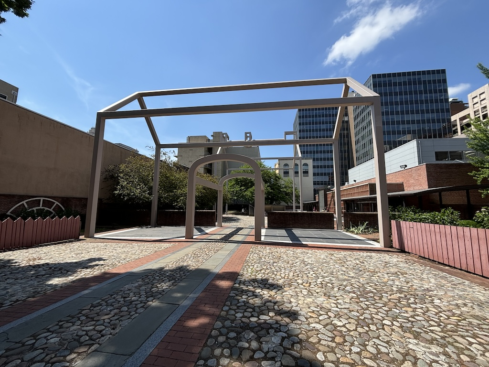

18th to 20th June 2024
Philadelphia. To me it mostly just felt like a noisy urban sprawl, where cars were the priority over all other things. But despite this the city has a rich and (relatively) very long history which I very much enjoyed exploring. Here's an update on what I got up to.
I drove to the hostel and asked where the best place to park is. They recommended a multi story car park 2 blocks away. As much as this was convenient I was more after a cheap or potentially free way to store the car, but none seems to exist in downtown Philly. So $26 a night it is. I went for a walk down to the delaware river to look at the Benjamin Franklin bridge and see if there was anything to be seen.
Off the edge of Race Street Pier you can get a good view of the river and appreciate it's size.

There wasn't much else to see really, except for Cherry Street Pier which housed one of the original tram cars used within the city, now refurbished as an eatery

On the way back I took this picture to show the sort of waterfront Philadelphia has by it's most prestigious streets (Main/Market street, Arch street, etc.). Either there's a lot of construction going on right now or this section of buildings are in constant disrepair. The sort-of main road right next to the waterfront also didn't make it the most appealing to walk along. Chestnut street has a nice pier at the end with some amenities but the backdrop all looks like this.

On the up side I did discover this cute little bookshop on the way back to the accommodation. It was 2 stories and selling the best kind of books - used and heavily discounted. The collection was quite old but with the sheer number of books in there I'm sure there's some diamonds in the rough.
The next day I spent my time seeing all the major sights of the city. I ended up squeezing a lot into this day, spending as much time inside somewhere as it was 30+ degrees centigrade outside all day. As the hostel was right next to 5th and 6th street I headed straight in to see arguably the most famous thing in Philadelphia - the Liberty bell. It famously cracked on its first ring, so as a traditional bell it was not used as such. Although due to the times it existed in and the inscription it bears ("Proclaim LIBERTY Throughout all the Land unto all the Inhabitants Thereof,", Leviticus 25:10) it has been associated with the American Revolutionary War and later with the abolition of slavery.
Next I went to Independence Hall (originally Pennsylvania State House) which required a small security check.
There were guided walks around Congress Hall which to my surprise were free. We sat on the ground floor with a talk on where each famous politician would have sat and the balcony where the public could watch and listen in. Later we went upstairs to the senate hall. In the image below you will see there are only 15 stars around the eagle painted on the ceiling, representing the 15 states that existed as part of the united states at the time.
After this talk I headed west into the more modern part of town to visit the last of the halls I'll see today - City Hall. This structure sits on the intersection of 4 major roads in Philadelphia and is absolutely huge. It could have been a capitol city's church at the height and size it was. 4 walkways lead to this central plaza where a diagram of the city and star signs are marked on the ground and the central tower can be seen from base to tip. It sticks out above the surrounding walls so can be seen from outside too.
Walking out a different way I found the cornerstone that was laid during it's construction. Looks like it's the buildings 150th birthday this year.
Lunchtime and fortunately enough Reading Market was right round the corner. Imagine and indoor Spitalfields market but much more tightly packed in and serving arguably a wider variety of foods. There was loads here to try.
As it was so busy I had to head outside and sit in the non air-conditioned shade of City Hall to enjoy my lunch. For $16 I got potato wedges, green beans and a pulled pork sandwich. Not bad!

Now I haven't mentioned it yet but the 19th June is actually a national holiday in the US. Juneteenth National Independence Day celebrates the ending of slavery and as a result there was lots going on in town. Most notably a small festival was happening outside the African American museum. They had live music, food and stalls selling various products. Great stuff.
Now for another stroke of complete luck. I next headed into the National Constitution Center which was a few doors down and after walking in the entrance I was told that due to the holiday the entrance fee was free and that a show was about to start. I said thank you, took the wristband and headed into the theatre. No filming was allowed but I assumed one cheeky photo before the show started was fine.
Now I would never complain about free entertainment - never look a gift horse in the mouth and all - but this show was unbelieveably patriotic. A man presented with video and slides projected on screens around the edge of auditorium the story of how the American constitution was first created. Except it was heavily over dramatized. They use loud upbeat motivational music throughout the whole thing and it brushed over any issue the USA has encountered through it's government entirely. Again, it was free. But I can't say I enjoyed it.
Something I did enjoy was the Signers Hall piece in the museum. The room is a recreation of the signing of the constitution - the point where all the independent states became "united". Each state is represented by 2 state senators (I think) and based on drawings and descriptions 2 artists created them all. It took them 3 years to complete but they did a good job. They were fantastically detailed.

In the center is where the table would have been sat with the first finished draft of the constitution. Arguably the most famous of the bunch and sat down by the desk is Benjamin Franklin. In the background you can see 2 men - Elbridge Genny from Massachusetts and Edmund Jennings Randolph from Virginia. Interestingly they were 2 of 3 senators that chose not sign the constitution.

Next I tried to visit the United States Mint, or at least the original mint (I believe most printing is done in Washington D. C. now but I could be wrong). Sadly it was closed.

Final stop of the day was the Benjamin Franklin museum which, thanks to the federal holiday, was free! The museum lays underneath where its believe Franklins house was constructed. The original house design is shown quite creatively next to the museum entrance with this white wire frame structure.
There was lots in the museum to take note of such as old chairs he used to use and a gondola that he was carried around in during his later years. However the only photo I took (mostly to send to a friend of mine that loves chess) was his original chess board. The museum states he used to play a lot of chess to exercise his mind. Not a bad looking set if you ask me.
Back at the hostel I got chatting with a Colombian guy who was giving a talk at a conference that Friday. He asked me to check his english on his powerpoint slides and after about 30 mins of tweaking it together he offered me a coffee. A coffee with beans grown on his family farm in fact. It was about 6pm, but I couldn't say no to an offer like that. He explained at home they brew the ground coffee beans straight in a pan on the hob. So that's what we did.

It was a lovely chocolately flavour. If anyone is curious about where it's from this is the label of the stuff they sell, although I'm not sure it's shipped internationally.

The next day I went to the beach in New Jersey (see my later beach day blog when I put it up). After driving back I realised I hadn't tried the famous "Philly Cheese Steak" I've been recommended a number of times now. So I headed to "Oh Brothers" around the corner and ordered one. The mural on the wall they had was good fun, showing off I'm guessing the most famous people from Philadelphia. I know they're all just screenshots but it kinda looks like whatever Devito is saying Stallone's not interested.
It was cheesy and greasy and pretty much a great late night snack. Could I eat 3 of them? Absolutely not. But I did enjoy this one.

I'll eat some vegetables tomorrow to balance it out. Y'all have a good one.
Navigate home